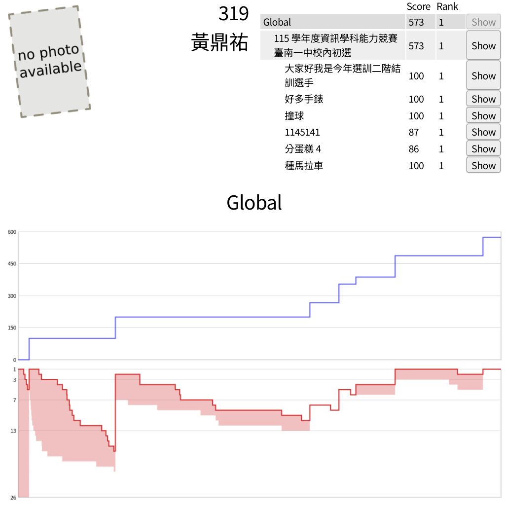

2026校內資訊能競初選
許久沒碰競程剛從地奧回鍋
然後初選就打得特別好所以來寫一下心得
放成績先

前情提要
我大概快一年沒有碰競程了
國際賽回來之後其實特別放鬆本來說要認真準備捲爆全場但都在睡覺
到初選前幾天才比較認真一點複習了一些演算法
昨天刻懶標線段樹還燒機…
我真的怕我連 10 人都進不了
而且當天早上 3, 4 節還要去成大修普物 順帶發現我忘記寫作業
午餐請 JKdelta 買了萊爾富涼麵就帶著真理果綠去比賽了
測機
誰測機題出那麼難阿
看起來一臉 NP-hard 問題
然後還有特別難的互動題 真的有解喔
所以就簡單測一些東西完全沒有要寫題目的意思
賽中
反正就是先點開題目(連結待補)
pA 哇簽到題 還不趕快寫一寫
原本以為可以搶首殺結果發現大家都寫好快、、、
因為 tobiichi 說題目大致按照難度排序所以快速寫完之後就跑去看 pB
看到最近距離第一個聯想到的是中位數 然後在那裡推推推就燒機了
大概想了 20 幾分鐘加上看了其他題目之後發現 鬼蘋果猴子寫了 pD 就直接去想 pD 了
因為題目很簡潔所以一看就知道大數學題
但是突然 pB 好像又有靈感了所以就稍微推了一下 pB 發現 解
於是半小時多就拿到了 200 分
接著又回到了 pD, 怎麼感覺我有點注意力不集中
第一眼就想到 87 分的解法 想說壓常一下可以撈到 93 分
在那裡測試埃篩 1e8 會不會過但是一直都在 1s 放到 judge 上也有點燒機
想說常數再壓多一點 結果 code 自己也燒機
中間還注意到比賽結束時間設錯少了半小時超好笑
還在想怎麼用 bitset 去算質數個數 但後來就有點放棄了所以又去想其他題了
回來看真的覺得我注意力好不集中 雖然好像只是想說放在背景運行看有沒有想到解法
這時距離比賽開始的時間已經過了大概一小時半了 所以只好趕快開題
不然我的分數一直停在 200 分排名一直掉掉到 10 名外了
看完 pC 發現無解是假議題然後感覺有一個很奇怪的感覺
注意一下就發現亂做複雜度應該都是好的 但是實作好麻煩
在經歷了覺得實作好麻煩跟覺得自己十分鐘寫得出來後
丟上去 欸三小 67 分?????????
在除了 AC 的 JKdelta 之外我還是第一個拿到這樣子任務分數的人(而且剛好那時最高)
就斷定是被卡常數了
然後在等待 67 分出來的時候我跑去把 pD 87 分拿了 真的好簡單
在把 pC 稍微壓個常數後就 AC 了 超爽的我是常數大師
這時候就很爽了 因為已經 387 分大概跟 3 個人同分在第 4/5 名的樣子
後來看到 pychen 已經 487 分了而且 pF 也不少人寫就認真去看 pF
pF. 種馬拉車
???
讀完題目: 喔馬拉車演算法…嗎?
然後就發現到關鍵資訊
簡單開始實作了一下發現程式有 bug 出在範例測資w
又想了一下決定暴力砸過去應該是好的
所以就大膽提交大膽 AC
寫完順利擠進 rk.1 但是感覺不夠穩 這時注意到 Brinton 寫了 pE 86 分
但因為 pE 題目超長所以我一直不是很想讀
在把題本整個讀過一次之後發現 pE 沒讀懂
現在再讀第二次稍微懂了一點 接著認真看了一下計分方式 86 分的範圍剛好會過
而且解法幾乎寫在題目了
所以簡單寫了 的區間 DP 就爽爽砸過去了
因為是互動題我懶得 compile 還好沒有 compile error
一開始我還少寫一行結果吃 WA 後來補上就爽拿 86 分
後來才知道不應該拿 86 分的 沒卡好但因為分數好像也卡不了?
在剩下 7 分鐘的時候拿下了 573 分 嘴角要比 AK 還難壓了
原本想多拿 pD 6 分但發現太開心了什麼都想不了就索性不想了ww
本來還在想 Brinton 什麼時候才會破台結果他說寫到睡著???
於是就爽拿了第一名
賽後
pD 要用 min25 篩
有在 OI wiki 上看過的東西 但顯然我不會做
pE 要用 knuth 最佳化還有對角化跟壓縮演算法
顯然我還是不會
看起來 573 就是我幾乎極限的分數了(可能再多個 pD 的 6 分?)
pC/pF 都不小心卡了常數 好像是那個時候 judge 特別卡?
幫 DB debug pE 的時候發現他不知道字串加法複雜度哈哈
活該拿 0 分
心得
先評價一波
pA: 簽到題
pB: 數學暴力題
pC: 純暴力題
pD: 好難的數學題/子任務暴力
pE: 好難的互動題/子任務寫在題目上
pF: 純暴力題
感覺有點小水 沒用到什麼演算法 但打得很開心
然後
pychen 怎麼寫那麼快他不是沒打競程了嗎
asdfg 又藏 code 藏到燒機 怎麼 pA 30 分鐘才 submit
一開始 pB 燒機我以為我完蛋了 還好後來有很快的想到解法
然後後來卡 pD 很久就只是為了要多拿 6 分超好笑
這次比賽我沒有什麼壓力所以可能因為這樣發揮得比較好
中間一直卡在 200 分的時候也沒什麼壓力 倒是 tobiichi 看得滿緊張的w
後來沒有多想 pD 後分數根本用噴的 一路飆上去
希望複賽也能像這次一樣發揮
cover from: 對我垂涎欲滴的非人少女